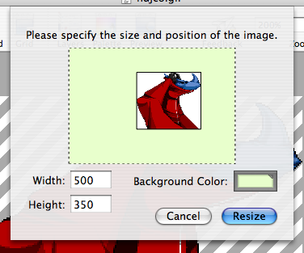

Resizing the canvas
Pixen allows you to easily change the size of the canvas on which you're painting without stretching the image that's already there (for that, see scaling the canvas). Simply use the Resize Canvas sheet (accessible through Edit > Resize Canvas...):

The width and height fields allow you to specify the new size of the image. You are free to pick sizes both larger and smaller than the original: the screenshot above specifies a much larger image than the original.
To designate where in the new image you'd like the old picture to be placed, simply drag the thumbnail around in the large preview area. As you drag, numbers will appear indicating the distance from each edge for alignment purposes. You can also use the arrow keys to move the image more precisely.
The color specified in the background color well is used to fill in any area of the canvas exposed by this operation that had no data before. If you'd like it to stay blank, you're free to leave this well as the clear color.